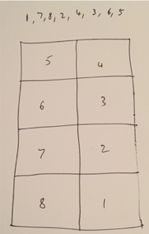
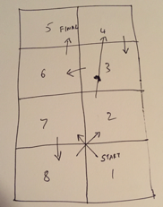
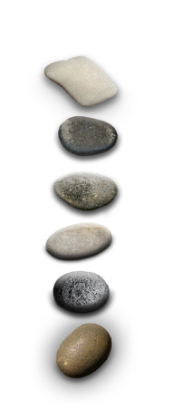
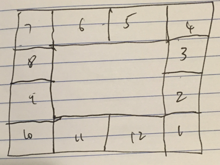
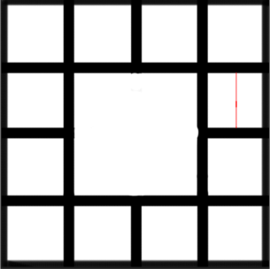
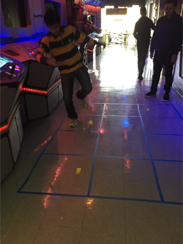
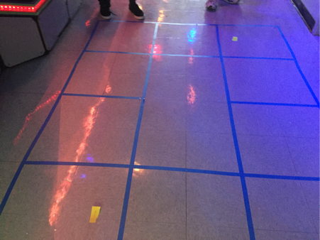

I wanted to improve the game of hopscotch, a popular playground game and make it more fun and entertaining to play. Hopscotch is a game where the guest needs to toss a stone or any object which can be tossed around onto a course labelled from 1 to n in ascending order. n can be any number which is usually around 8-10. The guest is then required to hop from 1 to n, avoiding the cell where the stone is currently placed, making sure to avoid the border of the grid. Landing on the border/line of the grid results in a disqualification.
What makes hopscotch a good game?
Problem Statement
In the current version of the game, the player gets to rest in between the game in positions 2,3 and 7,8. This makes the game less challenging as the guest does not get tired too soon in one round. If the course of the game increases and if there are less breaks in between, the game will turn out to be more fun. This is one part of the problem that I wish to tackle in my new design of the game. The new version of the game will include a cell where the guest can place both his feet down but the length of the course will be longer but there will only be one break per say.
Another issue that I faced with the current game is that the challenge of the game is only involved in the part where the guest throws the stone. Once the stone is thrown, it is easy to circle through the course and come out of it victorious. I would like to work on this aspect of the game and make it more challenging. Currently, the guest landed on the cell before the cell where the stone is tossed onto, picks it up and then continues to exit the course. The amount of challenge to stoop down and pick up the stone is not enough in my opinion. This needs to be more challenging. In my design I hope to tackle this issue by making few tweaks to the gameplay rules.
As the game progresses, someone who has mastered the game continue to win indefinitely. Also, once the guest is ahead by a certain number of cells, it is hard to catch up to him and overtake him. The flip side of this is that the game is not progressive enough. The game only involves progressing in the ascending order of the number line and maybe descending down it once the maximum is reached. The game needs to get challenging with time. Also, there should be an urge to play more of the game other than just defeating your fellow players by progressing along the course. In this design, I have borrowed some inspiration from board games like Monopoly and mobile applications like Foursquare and hope to create a game which is more fun to play as the players progress through it.
Few new ideas for Hopscotch
Drilling down deeper into a few of them

As shown in the figure, the grid represents a standard game of hopscotch. The guest is required to move from 1 to 8. In my iteration of the game, all the players together decide on the sequence in which the guest is supposed to move.
In the example given, the guest is being given the sequence of 1,7,8,2,4,3,6,5. Notice how each cell is a neighbouring cell of the previous cell other than the transition from 2 to 4. Here, the player is forced to hop from 2 to 4 without landing on 3.
All standard rules of the hopscotch is included. One rule that’s included is that, if the guest forgets the sequence and hops onto a wrong cell, he is disqualified from that round. The guest not only has to move forward in the sequence, he/she is required to hop back in the descending order as well, in this case 5,6,3,4,2,8.7,1.

The image shown to the left is the path taken by the guest as he traverses through the first half of the game from 1 to 5. The same path needs to traversed to finish a round.
What makes this iteration interesting?
The standard rules of this iteration is not very different from a regular hopscotch game. As mentioned above, the biggest downside of this game is that, it is extremely linear in nature. The guest has to traverse through the same grid, in the same order each time they play. This improvement has been introduced to remove the linearity of the game. After every 3 rounds, the sequence is changed and each player takes turns shouting out the new sequence. This sequence is only presented once for those 3 rounds and can be written down and hidden incase the players are worried about everyone forgetting the sequence.
2. Hopscotch Monopoly
This is the version of the game I feel wish to create and improve on as I feel it combines few ideas from other forms I’ve already suggested. As suggested in the previous section, hopscotch suffers from boredom an hour into the game. Other than a sense of competition between the players, there is no goal the players are working towards. This is what I hope to improve in my iteration of the game.
What makes this iteration interesting?
The game is no longer linear. The hopscotch course will be designed similar to a Monopoly board and will need the guest to start from a point, go around the course and get back to that start point each time. The number of stops or places where the player can stop and rest are limited. This improves the speed of the game and makes it more challenging. Even though hopscotch is considered a game, it lacks few basic requirements of a game. An interesting article by Keith Burgun named “What Makes A Game?” is good reference to answer this. Despite the fact that hopscotch has a system of rules, agents (guests) are not forced to make ambiguous decisions. In this iteration of the game, I wish to bring such elements into the game of hopscotch.
3. Play with a series of stones. As you progress, replace the current stone with a stone that is harder to play with (say a stone that is less flat)

One of the major issues hopscotch faces is that, once a guest masters the technique to throw the stone, he continues to get better at the game and there is no way to catch up to him. There are other cases where the stone used by the player is perfectly flat and just right that it does not bounce away once it gets thrown onto the grid.
One way to tackle this situation is to have stones of different sizes and as the player progresses through the game, he is forced to use stones that are harder to play with. For example, as he progresses down the column, he can be made to pick a stone that has more rounded edges.
What makes this iteration interesting?
In this iteration, the position of the different players in the leaderboard will be less dispersed. This helps the players who are lagging behind in the game, catch up and move forward, closer to the leader. As the game progresses onto harder cells of the grid, the competition between the players will be more neck and neck. This prevents a long winning streak for most of the winners.
PART III
The idea I wish to explore and develop on is the Hopscotch Monopoly version of the game.
The rules for the game are as follows:
Setup:
A large square needs to be drawn on the floor with 12 cells and sufficiently enough space to hop onto each one of them as shown below.

The guests are requested to have a variety of stones in different shapes as shown below. The requirement of the same will be explained in the rules below.
Instructions:

Play Tests
In the first iteration of the play test that included friends, the size of the hopscotch had to be reduced to 10 due to a real-estate constraint. This does not have any effect on the game.
Even though they found the rules quite straightforward, the game started to take too long and was continuing indefinitely as the guests were taking over each other’s sub-cell and clear winner could not be decided.
The game finally had to be ended by the players deciding to declare the guest with the most number of sub-cells as the winner. Another issue faced in the play-test was the spherical stone. As the game progressed and the stone was replaced by more rounded ones, the game started to become harder and the guests who were lagging behind caught up to the leaders, but from then on, the progression of the game was observed to be slower as the chances of the players landing the stone in the right position had started to diminish.
Learnings from the play-tests

As the game consists of 12 cells, the first iteration comprised of the guests moving through the course once, without claiming any parts of the cell. This part of the game was not very different from the usual rules of hopscotch. The only difference was that the player had to step onto the stone, hop onto another location in the same cell to pick up the stone. This made the game more fun as there was always a challenge to pick up the stone. There were times when the guest landed on the stone but hopped onto the border and other times they would land on the stone but accidentally kick it away from the cell. This was a valuable take-away for a feature.
I noticed that there would be a deadlock case when two guests claimed two halves of the same cell. If there were more than two players, the third player couldn’t play that cell as he was making his way through the course. Skipping that cell all together destroyed the purpose of the division. This mechanic had to be rethought.
3. Redundancy
Even though the mechanic of dividing the cells into sub-cells was interesting, there was still a form of redundancy and lack of fun in the game.

Iterations That Focussed On Making The Game Fun
To tackle the slow progression of the game, the rule wherein the guest could claim a cell after playing the entire course was altered. This was done in an intension to make the game more fast paced and fun. As soon as the guest drops the stone in the first cell and completes the course, he gets to toss the stone again to claim a part of the cell. The image below shows the state of the game after two passes (after guest A and guest B have successfully captured half of cell 4 and 9 correspondingly)
“Guests could claim sub-cells after each round of the game”
This change in the rules quickly escalated the game into a strategy game where guests were trying to take over other guests’ “territories”. There was more engagement by the guests who weren't playing the game at that time as well. Guests weren't idling around, waiting for their turn, but were involved in the decisions each player was making as they started claiming sub-cells.
When a player started to get better, others started to tag team against him. They started to take up adjacent sub-cells to prevent him from advancing forward easily. This led to a new rule in the game:
If both the sub-cells have been occupied, the player has to pass through those cells using their hands and quickly landing on the cell which is safe for them to land on. The guest could also ask for one of the sub-cell holders to act as his ally. If he agreed to it, the guest could hop onto that sub-cell but had to give up one of his sub-cells to the other guest.
For example: If guest A makes guest B his ally to use one of his sub-cells, guest A had to give away one of his sub-cells to guest B.
The made the game more personal where guests started to plot against one another to win the game.
An extension to this rule was made in games where there were 4+ guests. The guests to whom the sub-cells did not belong to could tag-team and play that round together. Both of them had to choose a different sub-cell to which they would throw the stone and on successful completion of the course, the two guests to whom the sub-cells belonged to would no longer have power over them. The cell will be devoid of all the guests and the guests have the opportunity to claim them again.
“New system of allies were introduced which could help guests in tough situations”
Future Avenues To Think Of
Conclusion
In this version of hopscotch, I feel I was able to make the game more fun and enjoyable to everyone. The problem with the regular version of hopscotch was tackled and results were observed. The guests paid more attention to the new version of the game and the game felt more challenging. There was a sense of multiplayer that was developed during the game and guests interacted more with each other as the game progressed. The game was built to be well rounded and at every point, every guest felt vulnerable and had to think on his feet to make sure his territories were protected and had to strategise in order to win the game.